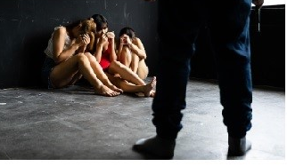

CUIDADO
Aunque algunos grupos son más vulnerables, cualquier individuo puede convertirse en víctima de este delito.
Los tratantes utilizan diferentes estrategias para manipular y controlar a las personas.
Por lo que la prevención y la educación son herramientas fundamentales para proteger a la sociedad.
La trata de personas puede afectar a cualquier persona, sin importar su edad, género, nivel económico o lugar de origen.
La trata de personas suele comenzar con engaños que parecen oportunidades reales.
Los tratantes ofrecen empleos bien pagados, becas, viajes o promesas de una vida mejor para atraer a las víctimas. Sin embargo, una vez que logran ganarse su confianza, las someten a situaciones de explotación y abuso. Por ello, es importante conocer los riesgos y verificar siempre la información antes de aceptar cualquier oferta.
La mejor manera de combatir la trata de personas es mediante la prevención y la información. Conocer las señales de alerta, hablar sobre el tema y denunciar situaciones sospechosas puede ayudar a evitar que más personas sean víctimas. La participación de la comunidad, las familias y las instituciones es esencial para crear entornos más seguros y proteger los derechos y la libertad de todas las personas.